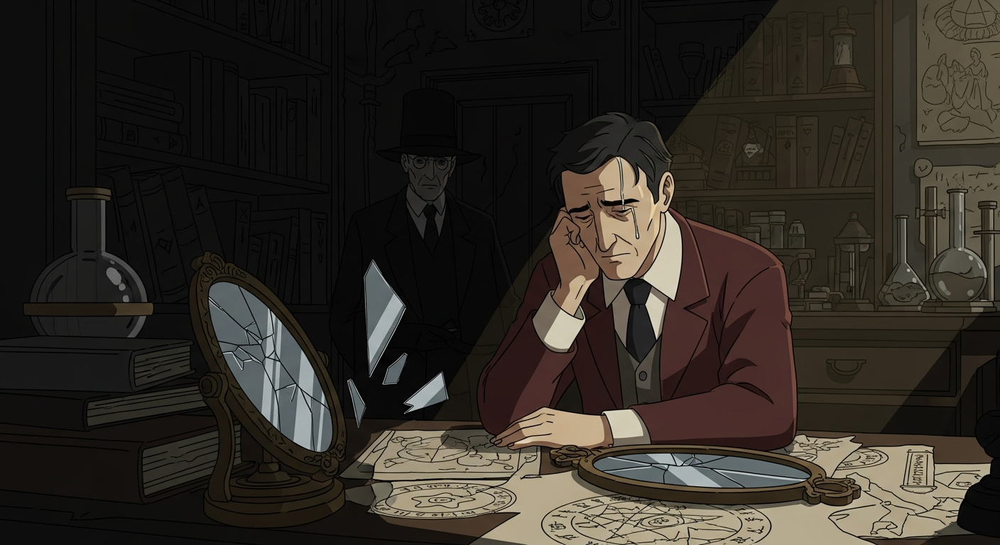
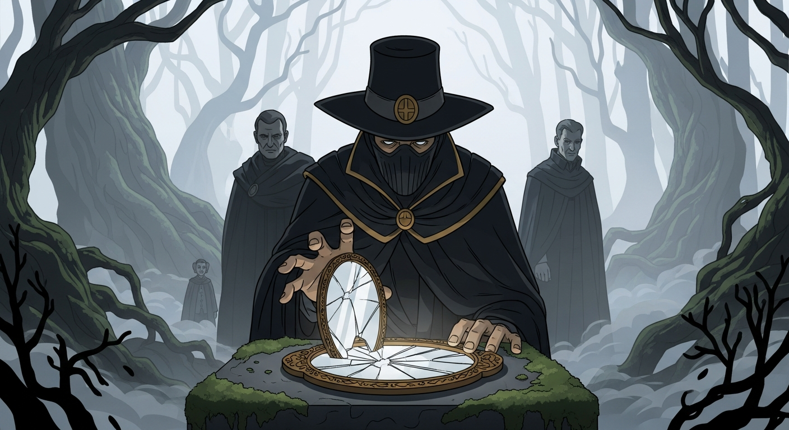

Agrippa… always Agrippa. Sifting through this desk, I find a false bottom—a cracked mirror and *Invisibilia Dei*. Touching the glass… a distorted reflection. Whispers? 'The Alchemist’s Last Secret.' I investigate, not judge, but even I can’t deny the room just got colder. And is that *Evil Dead*… pulsating?

The mirror… Agrippa's last secret. I sought Alexander F—scholar, not zealot. His study: *Picatrix* cheek-by-jowl with *Arthur C. Clarke's Mysterious World*. Alexander recognized the glass immediately: a tool for glimpsing truths, he said. But the 'secret'? A fractured piece of Agrippa's psyche. Dee tried this path, and failed. Tradition is peer pressure from dead people, but still, I had to know.